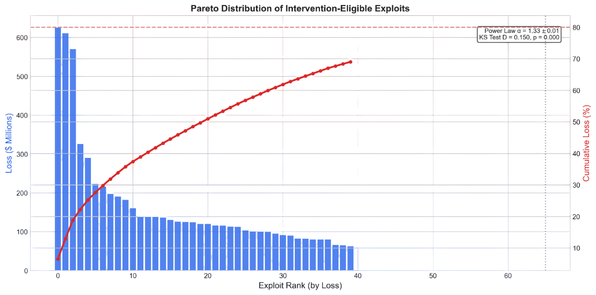
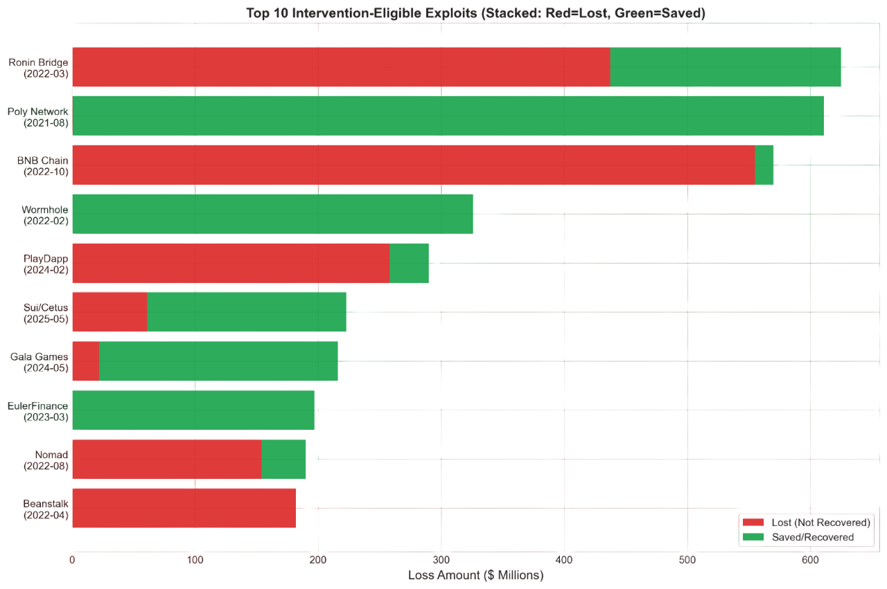
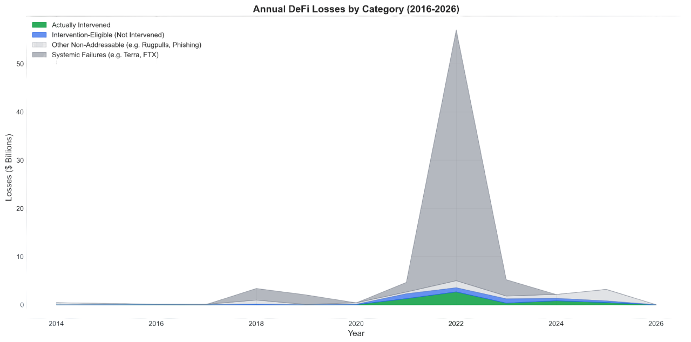
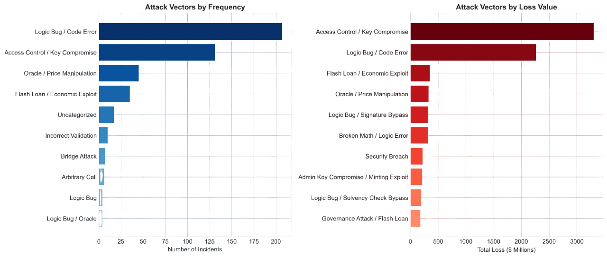
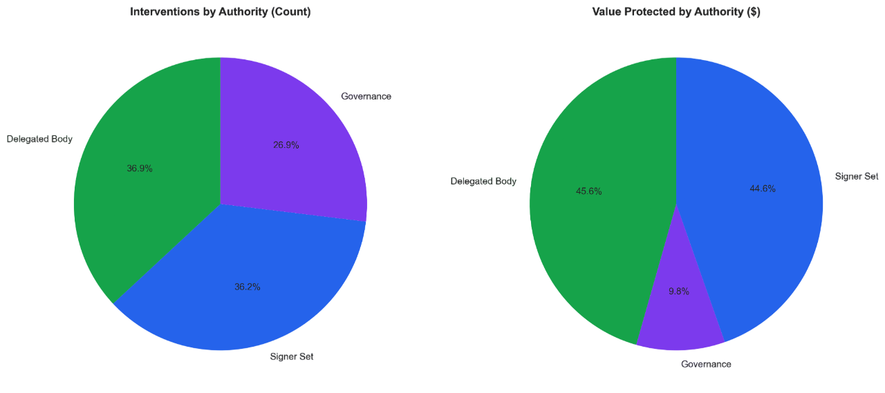
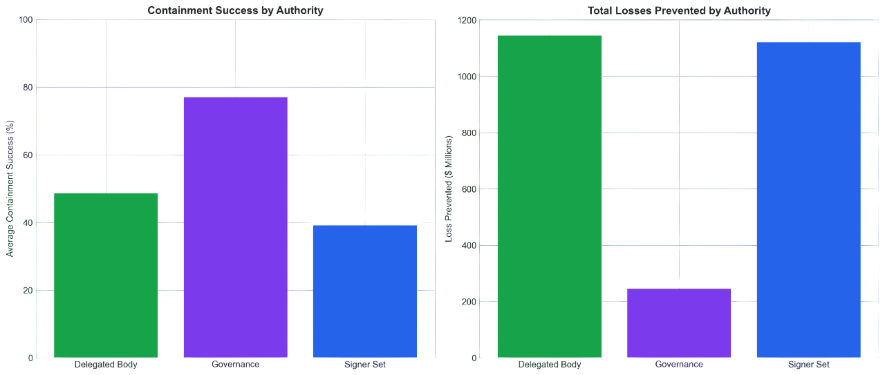
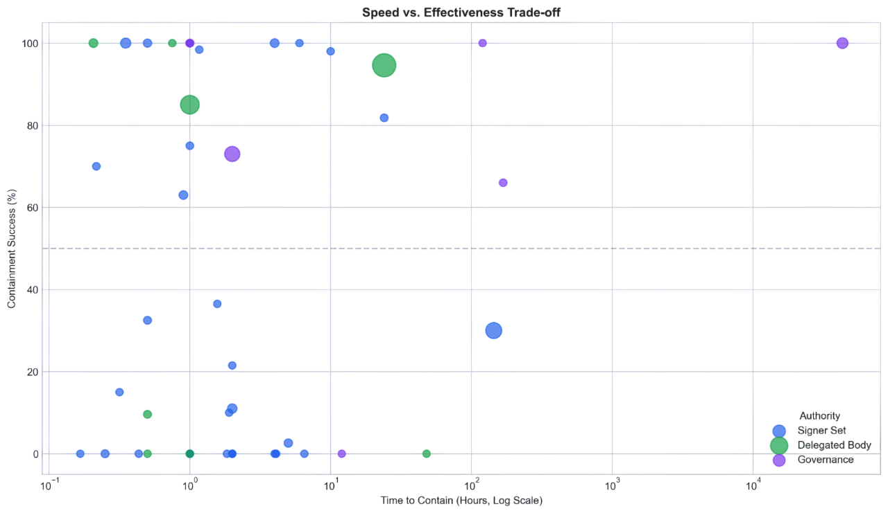
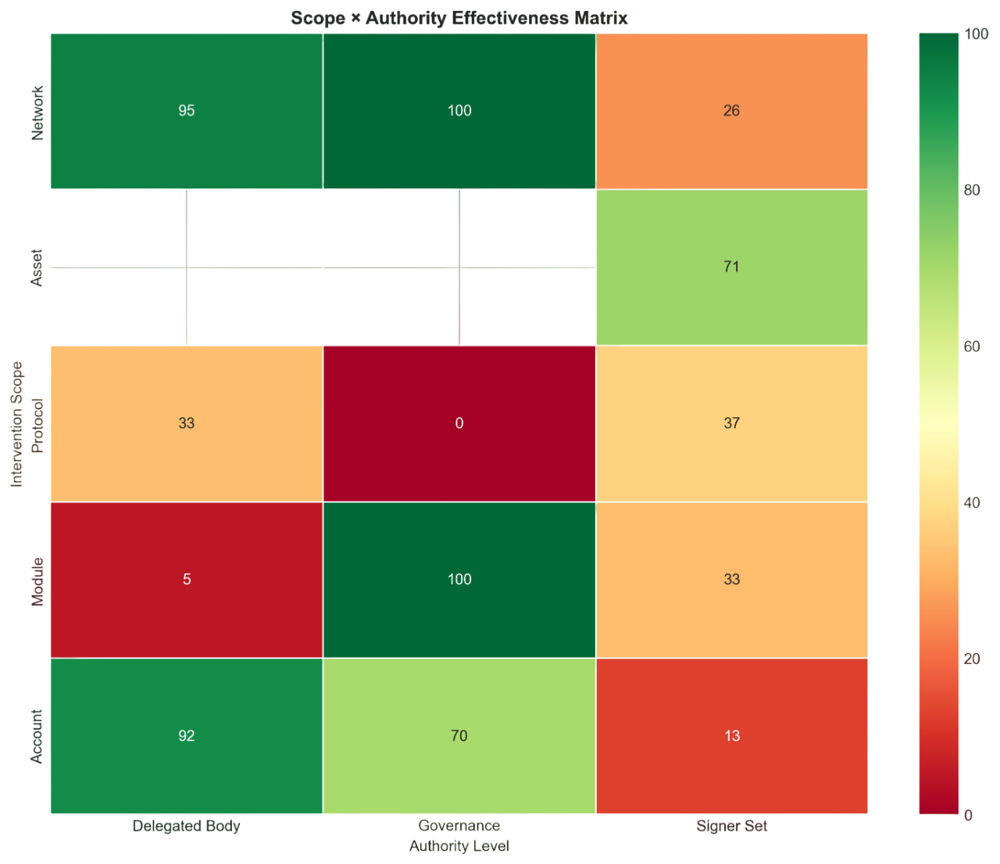
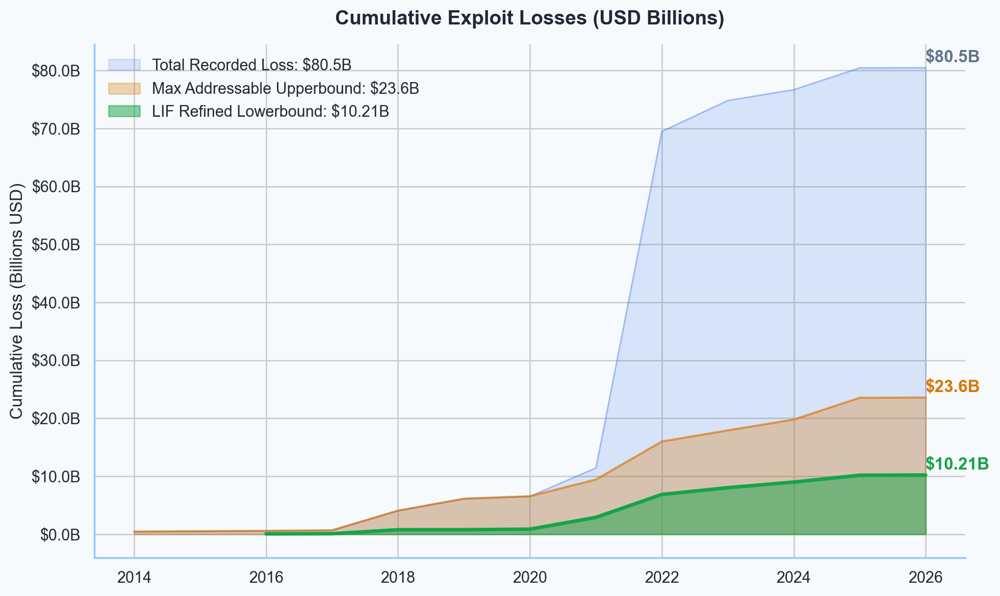

Between 2014 and 2026, we documented 705 exploit cases resulting in $78.81B in cumulative losses. Of these, $9.60B was intervention-eligible—losses where a protocol override could have prevented or reduced damage. This research asks a simple question: when code fails, who should be allowed to intervene, and how?
2022 peaked at $58B in annual losses, driven by the Terra/Luna collapse and the FTX implosion. After a 91% decline, losses climbed back to $3.76B in 2025. The threat is not receding—it is restructuring around new attack surfaces.
Losses follow a power law (α ≈ 1.33): the top 10 incidents account for 40% of all losses, and the top 1.4% of cases produce 80% of cumulative damage. This extreme concentration means a small number of well-designed interventions could have disproportionate impact.


Not all losses are equal. We decompose the $78.81B into four layers:
Layer 1 — Systemic collapses (Terra/Luna, FTX). These are beyond intervention scope; no kill-switch prevents a bank run. Layer 2 — Social engineering and off-chain attacks. These bypass on-chain logic entirely. Layer 3 — Technical exploits where the protocol had intervention capability but did not act in time. Layer 4 — Technical exploits where intervention mechanisms were absent.
Layers 3 and 4 constitute the $9.60B intervention-eligible market. Of this, $2.51B has actually been prevented—a 26.0% effectiveness rate, leaving a $7.09B opportunity gap.

Logic Bugs lead with 231 cases, exploiting unanticipated state transitions in smart contracts. Key Compromise follows at 127 cases, where stolen private keys bypass all contract-level safeguards. Oracle Manipulation accounts for 62 cases but carries the highest per-incident severity—flash loan attacks can drain pools in a single transaction.
The vector evolution tells a story: in 2020–21, flash-loan-driven oracle attacks dominated. By 2023–24, attackers shifted to key compromise and social engineering, exploiting the human layer. Each vector class demands a different intervention architecture: pausing for logic bugs, key rotation for compromises, oracle circuit-breakers for manipulation.

We classify every intervention by its authority level—who makes the decision to act. Signer Sets (multisig key holders) handle 71.2% of interventions by count, acting fastest at a median of 30 minutes. Governance votes, while the most legitimate, take 30+ days and cover just 11.5% of cases.
The middle ground—Delegated Bodies like Security Councils and Emergency subDAOs—account for 17.3% of cases but show the strongest capital protection at $1.10B prevented. They balance speed (60–90 minute median) with democratic accountability through elected membership and constrained mandates.


The paper's core finding: speed and legitimacy are inversely correlated. Interventions within 60 minutes prevent 82.5% of losses on average. After 24 hours, effectiveness drops to 10.9%. We call this the "golden hour"—the window where rapid action is existentially important.
This creates a fundamental tradeoff. Fast responders (Signer Sets) act unilaterally—effective, but centralizing. Slow responders (Governance) are democratic but arrive after assets have been drained. The question is whether we can design mechanisms that are both fast and legitimate.

We propose a two-dimensional classification: Scope (what gets affected—Account, Module, Protocol, Network) × Authority (who decides—Signer Set, Delegated Body, Governance). This creates a 5×3 effectiveness matrix that maps the design space.
The sweet spot: Account × Delegated Body achieves 92% containment success—narrow scope limits collateral damage while elected bodies provide legitimacy. The danger zone: Protocol × Signer Set achieves only 33%, where broad scope combined with unchecked authority produces unreliable outcomes.

Of $9.60B in intervention-eligible losses, the industry has prevented $2.51B—a 26.0% effectiveness rate. The remaining $7.09B represents the intervention opportunity gap: losses that could have been prevented with better mechanism design.
The path forward is not more centralized kill-switches, nor slower governance rituals. It is composable intervention architectures—tiered authority with automatic escalation, constrained emergency powers with mandatory sunset clauses, and scope-limited permissions that preserve the principle of minimal intervention.
